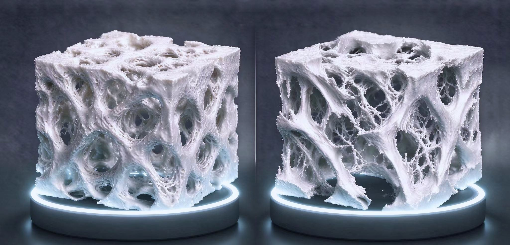
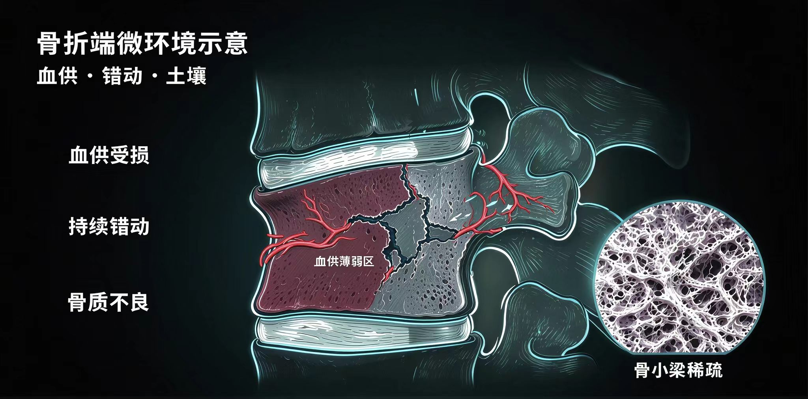
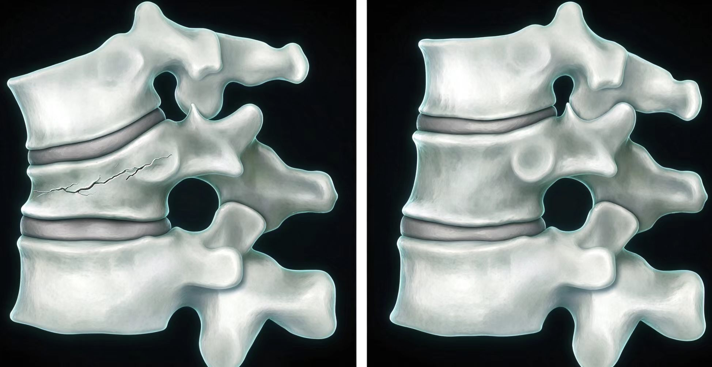
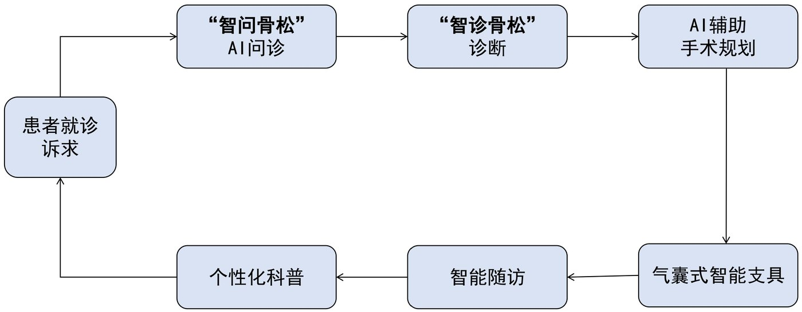
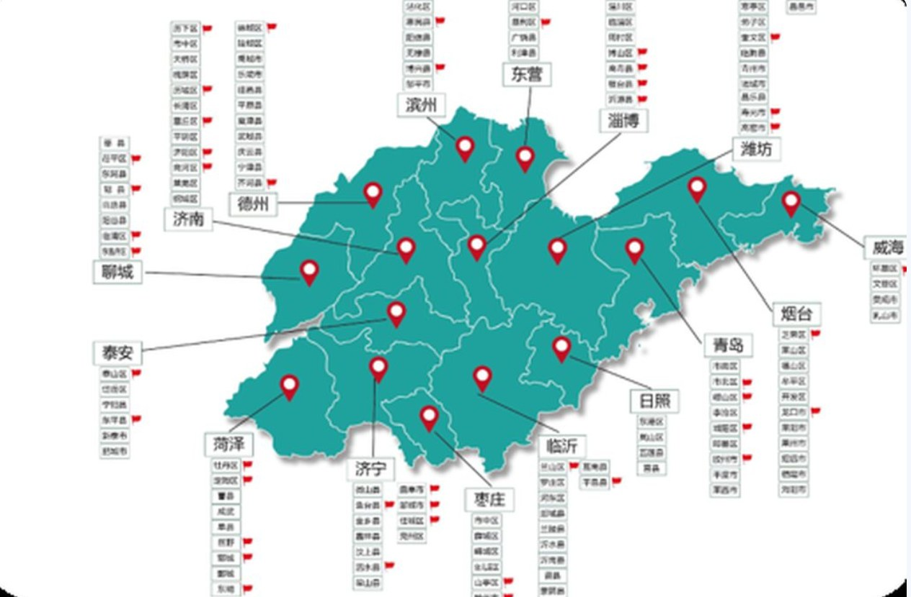
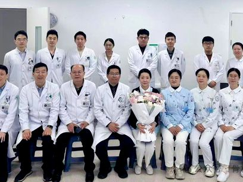

从骨量流失，
到不再骨折。
从骨质疏松、脆性骨折，到不愈合与长期管理
一个被“歇歇就好”耽误的慢病
写给两类人：想替父母做点事的子女，和想自己弄明白的长辈。
聚焦 · 骨质疏松性椎体压缩骨折（OVCF）最常见的脆性骨折，也是最容易被漏掉的一种
三维示意 · 基于开源解剖数据模拟
老龄化社会里，
它被叫作“隐形杀手”
骨质疏松早期几乎没有症状。等疼了、矮了、摔了，往往已经发生了骨折。它不是一个罕见并发症，而是一个正在加速的公共卫生负担。
这些数字最终都落在椎体上：约一半以上的骨质疏松性骨折发生在椎体，而只有约 20% 的椎体骨折患者去医院看过——剩下的人，是在驼背、变矮、腰背痛里被“熬”过去的。
骨质疏松性骨折的医疗费用与社会负担沉重，预计 2050 年将达 1630 亿元。“每 3 秒 1 人”为国际骨质疏松基金会（IOF）全球估算，非中国单独数据；“4 年死亡率约 50%”来自非手术治疗队列，并非所有椎体压缩骨折的自然史。
骨质疏松查一次就能发现，却最容易被漏掉——患者约 9000 万，而基层普遍缺设备、缺队伍、缺经验。受崂山区卫生局委托，我们团队联合崂山、王哥庄、沙子口、北宅 4 家基层卫生中心及所属近 50 家卫生室，把“居家问卷初筛 → 社区 DXA → 三级医院定方案”的三级联动跑通，并在 50 余个卫生室开展义诊筛查。
11.7% 的检出率，说明基层还有多少没被查到的人；750 名极高危者，一次跌倒就可能骨折。这个模式 2023 年起被列为崂山区区办实事、2024 年列为区重点医养项目，区卫生局按每年 60 万元连续支持 5 年——全国首创的基层骨松筛查与干预项目，也是乡村振兴里最实在的健康底座。
是在骨折之后才知道。 数据来源：公开临床资料与流行病学调查；崂山三项为项目累计工作数据，统计口径以公开资料核定为准。
为什么叫慢病？因为它同时满足三条：无声、终身、会级联。
它为什么是慢病
骨质疏松的“慢”，不是“慢慢会好”，而是“一直在”。它有三个特征，决定了不能按“一次骨折”来处理。
无声：全程没有感觉
骨量每年流失 1%–2%，人没有任何不适。等到疼、矮、驼，往往已经发生过一次骨折——它不是“查出来的病”，常常是“摔出来的病”。
终身：不是治几个月就停
抗骨质疏松药能在用药期间把风险压下来，但停药后骨量会回落。它像高血压、糖尿病一样，需要长期管理，而不是“疗程结束”。
级联：一次之后，下一次更近
第一次椎体压缩骨折之后，1 年内再发椎体压缩骨折的风险约 22%，2 年内约 32%。这不是运气问题，是风险窗口被打开了。
这三条合起来，才是“慢病”的完整含义：没有症状、需要长期治、并且会复发。下一屏从最基础的问题讲起——骨头究竟是怎么变空的。
慢病的底层，是骨量在悄悄流失。下一屏，看骨头是怎么变空的。
骨头是怎么变脆的
骨质疏松不是“骨头变软”，是骨头变空——承重的“钢筋网”一根根断掉，断了就补不回来。

骨小梁是什么？骨头里面并不是实心的：椎体这类骨头内部是海绵状的交错支架，一根根骨板和骨柱就叫骨小梁——它负责承重，也是全身代谢最活跃的骨组织。上窗是正常骨：骨小梁粗壮、网眼细密，力能一层层传下去；下窗是骨质疏松：骨小梁变细、断裂，孔隙越来越大，结构已经塌了。所以骨量减少不只是变少，更是塌了。
骨小梁，一根根断
椎体内部像海绵，由纵横交错的骨小梁支撑。30 岁以后骨吸收快过骨形成，骨小梁变细、断裂，断掉的那一根不会重新连上。
微损伤越积越多
日常活动会在骨小梁上留下微小裂纹，健康骨骼随时修复。骨质疏松时修复跟不上，微裂纹累积，骨头在“结构”上先塌了。
从“硬”变成“脆”
骨量减少、结构破坏，骨头能承受的力直线下降。别人摔一跤没事，你可能只是弯腰搬桶水、咳嗽一声，椎体就压塌了。
所以它可怕的地方不在“疼”，而在“静默”：骨量在没有任何感觉的情况下持续流失，第一次“被发现”往往就是骨折。
知道了它怎么变脆，接下来回答一个更实际的问题：还没骨折的人，现在能做什么。
还没骨折，
现在能做什么
一级预防的目标只有一个：把第一次骨折往后推，最好推到最后都没发生。下面三件事，性价比最高。
负重与抗阻：让骨头“受力”
每周约 150 分钟中等强度负重运动（快走、慢跑、爬楼梯），配合每周 2–3 次抗阻训练。骨头是“用进废退”的器官，只有受力才会被提醒去重建。平衡训练（太极拳等）对减少跌倒同样有明确价值。
营养：钙、维生素 D、蛋白质
钙与维生素 D 是基础；蛋白质尤其重要——肌少症和骨质疏松常常同时存在，肌肉少了，跌倒和骨折的风险一起上来（一般建议 1.0–1.5 g/kg/天，需按营养状态个体化）。
环境：把家改成“不容易摔”
清掉地面杂物和电线、卫生间加扶手与防滑垫、夜里留一盏小灯、把常走的路走顺。花费很小，但在还没骨折的阶段做，收益远大于骨折之后再补救。
这一屏讲的是还没有骨折的人。已经骨折过的，重点会变成防止第二次骨折——下面三件事仍然成立，只是优先级要重排。
预防之外，还得认识最隐蔽的那一种骨折——它常常没有外伤。
一次跌倒，
塌的可能不只是一块骨头
脆性骨折有三个高发部位，后果完全不同——而最隐蔽的那个，恰恰在脊柱。

椎体 · 最隐蔽
可能没有明显外伤，只是腰背痛了几天，翻身、起床时更明显；也可能只是身高悄悄少了 3 厘米、背越来越驼、衣服突然变长。因为没有“摔断”的画面，很多人因此错过了第一次就诊。
髋部 · 最凶险
骨折后一年内死亡率约 20–30%，即使手术成功，相当一部分人也回不到骨折前的行走能力。
腕部 · 最早的前哨
常发生在 50–60 岁，一次撑地就断。它本身不致命，但提示骨量已经在报警——后续椎体、髋部骨折的风险随之升高。
口径说明：髋部骨折后 1 年死亡率在不同队列为 15%–30%，与年龄、基础病、是否及时手术相关；这里取常见综述区间，不代表任何单一中心数据。
这些信号单看都不像“骨折”——所以“有没有”这件事，别靠感觉判断。下一屏的 10 个问题，就是把这类情况逐条问一遍；先答题，再看后面的解释，结果会更准。
下面这 10 个问题，可以自己答，也可以替家里长辈答——1 分钟，给骨折风险打个分。
花 1 分钟，
算一次骨折风险
10 个问题，替家里长辈答或给自己答都可以。答完给一个建议，判定规则见页面底部的折叠块。
连续 3 个月以上口服泼尼松（或等效激素）≥ 5 mg/天？
身高比年轻时矮了 3 厘米以上，或背越来越驼？
有过一次“轻轻一跌或一碰”就骨折（腕部、髋部或椎体）？
腰背痛持续 3 个月以上，休息也不缓解？
已绝经（包括 45 岁前早绝经、双侧卵巢切除）？年龄 ≥ 70 岁？
体重偏轻（BMI < 19），或近一年明显消瘦？
受测者的父母有髋部骨折或骨质疏松病史？
长期吸烟、每天饮酒 ≥ 2 两，或有甲亢 / 甲旁亢 / 类风湿 / 糖尿病 / 慢性肾病？
几乎不晒太阳、很少运动，或长期吃质子泵抑制剂（胃药）？
近一年跌倒过，或走路变慢、开始怕摔？
已答 0 / 10 题
如有 45 岁前早绝经或双侧卵巢切除，风险高于同龄人——这类情况建议比同龄人更早做一次骨密度筛查。
亚洲绝经后女性筛查研究的经验公式，只需年龄和体重两项：指数 =（体重 kg − 年龄）× 0.2，切点 −1 与 −4。仅适用于绝经后女性，男性不能用，请直接参考上方自测结果。
为什么是“体重减年龄”：体重轻和年龄大，是骨量下降最硬的两个信号。公式里 5 公斤体重差不多抵 5 岁年龄——体重每比同龄人轻 5 公斤，风险约等于老了 5 岁。两个不利条件同时叠加，指数就越往负走。
填两个数字，立刻给出指数与建议。
如与上方自测结果不一致，以上方自测和医生评估为准——OSTA 只看年龄和体重，不包含红旗信号。
自查信号速查卡（点开）
- 身高比年轻时矮了 3 厘米以上，或一两年内明显变矮
- 背越来越驼，或衣服突然变长
- 轻轻一跌、平地一坐就骨折
- 突发腰背痛，翻身、起床时更明显
- 疼痛超过 3 个月还没缓解，或好了又疼回来
- 起身、翻身、久坐后站起时更痛，躺下能减轻
- 身高继续下降、后凸加重，或同一节段反复塌陷
- 影像上看到椎体内裂隙征（IVC）
- 女性 ≥ 65 岁，或男性 ≥ 70 岁
- 45 岁前早绝经，或做过双侧卵巢切除
- 长期口服激素（泼尼松 ≥ 5 mg/天，超过 3 个月）
- 父母有髋部骨折，或确诊骨质疏松
- 低体重、吸烟饮酒、慢性病、少晒太阳、近一年跌倒
速查卡只作提示，判定以上方自测结果与医生评估为准。
自测的判定规则与依据（点开查看）
规则是怎么定的：红旗项采用“任一条为是即提示需要评估”的思路，与 IOF 骨质疏松一分钟测试（任一题“是”即阳性、建议查骨密度）一致；其他危险因素 ≥ 3 条只是“值得尽早建基线”的保守切点，不是经过队列校准的评分。本页不计算 FRAX 的 10 年骨折概率（需要年龄、体重身高、地区队列等连续变量），另外单独给出 OSTA 指数（体重−年龄）×0.2 作为极简参考，它源自亚洲绝经后女性筛查研究，只用于初筛提示、不是骨折概率。最终诊断与用药决策需 DXA 骨密度与医生评估。
如果自测提示风险，或者已经骨折过——看看这位患者的四个月。
刚骨折，
先要做一个选择
椎体压缩骨折之后，不是“躺着等它长好”一条路。分岔点看三件事：疼到什么程度、椎体塌了多少、还在继续塌吗。
保守治疗
支具保护 + 镇痛 + 尽早离床。适合压缩程度轻、疼痛可控、没有进行性塌陷的人。卧床时间越短越好——长期卧床带来的肌肉萎缩与骨量流失，代价往往比骨折本身更大。
微创强化 · PVP / PKP
往椎体里注入骨水泥。适合疼痛剧烈、又不耐受长期卧床的高龄患者，通常在伤后数周内完成。它快速止痛、让人早离床，但不治疗骨质疏松本身。
开放手术 · 少数人
做的是减压 + 复位 + 固定 + 融合：后路切开，去掉压迫神经的骨块，用椎弓根螺钉把骨折椎体上下固定，再植骨让它长成一体；后凸明显时先撑开复位，骨质量太差还会加骨水泥强化螺钉。适用于进行性后凸、椎体不稳、神经受压，创伤和出血都明显大于微创，需要专科评估指征，不是常规选项。
一针骨水泥，能把塌掉的椎体撑起来吗（30″）
胸腰段五节椎体，中间那节是 T12。
T12 压缩骨折：椎体被压扁，内部可能形成裂隙。
经椎弓根穿刺，工作套管进入椎体中后 1/3。
沿套管送入一个未充气的球囊。
球囊充气：顶起终板，椎体高度部分恢复。
撤出球囊，椎体内留下一个空腔。
换骨水泥输送管，对准空腔。
拉丝期骨水泥低量、低压缓注：少量即可撑起空腔。
最常见并发症是骨水泥渗漏；它不治疗骨质疏松本身，药物仍是底座。
药物决定的是下一次。
三条路都只是处理“已经塌掉的这一节”。无论选哪条，抗骨质疏松药物治疗都要同时开始——不启动规范治疗，下一次骨折只是时间问题。
下面这位患者，当时选的就是微创——术后当天疼痛明显缓解。但四个月后，他回来了。
第一次手术后四个月，
他又回来了
一位做了椎体成形术的患者。术后即刻，疼痛明显缓解——当时都以为治好了。
骨水泥注入椎体后本该与周围骨组织牢固结合、共同承重。一旦移位，说明这个“结合”失败了——它既是不愈合的影像信号，也是不愈合的直接结果。
在不愈合的椎体里，中间是一条由坏死骨与纤维组织构成的裂隙（IVC，即假关节）；裂隙内壁是纤维瘢痕与硬化骨，骨水泥渗不进去，只能“填”在那里，无法与周围骨小梁形成真正的机械锁扣。人一站一走，负荷就压在这团悬空的骨水泥上，松动、下沉、移位随之发生。
所以要解决的，从来不是那团骨水泥，而是它下面那个没长好的椎体。
但骨质疏松本身，没有因为一次手术而被治疗。
其实只是，不疼了。 病例资料已脱敏处理，仅用于健康科普。
第一次椎体压缩骨折之后，1 年内再发生一次椎体压缩骨折的风险约 22%，2 年内约 32%。而同样是椎体压缩骨折，半年后的走向也可以完全不同——区别在于断端稳不稳、血供够不够、骨头还撑不撑得住。
6–12 周，疼痛缓解
规范保守治疗下，多数人疼痛在数周内明显减轻，影像上约 3 个月见到骨愈合。这一类人不需要手术。
10–13%，一直不愈合
断端持续不稳、血供差，椎体内形成裂隙，即椎体内裂隙征（IVC），椎体越塌越扁。这就是下一屏要讲的 Kümmell 病。
10–13% 取自单个 OVCF 队列中 Kümmell 病的发生率（训练集 12.6%、验证集 10.9%）；文献报道的区间更宽（约 7%–37% 均有报告），与本图口径不同，需结合影像与症状判断。
多数人会愈合，少数人会走到“不愈合”。下一屏讲：为什么长不好。
这条缝，
为什么长不好
不愈合不是“运气差”。是血供、力学稳定性、全身骨质量三个层面，同时出了问题。

这也是为什么，治疗原则的第一条往往是“尽量减少卧床、动静结合”，而不是“躺着养”——但“动静结合”具体怎么动，后面会讲。
机制清楚了，接下来看医生在片子上究竟找什么。
影像上那处亮影，
只是一个线索
如果你或家人正属于那 10–13%，接下来医生会看的，就是这样的片子。X 线上，它有时表现为一条透亮带——即椎体内裂隙征（IVC）；在 MRI 上，则是含液与水肿的高信号。不管哪种片子，指向的是同一件事：那里没长好。
 左 T1WI · 中 T2WI · 右 T2WI 压脂（同一病例）
左 T1WI · 中 T2WI · 右 T2WI 压脂（同一病例）

看到一道缝，不等于确诊；但没有被识别出的不愈合，才是真正的风险。
X 光、CT、MRI 各自能看什么
椎体高度掉了多少、有没有楔形变、侧位片上能不能看到椎体内裂隙征（IVC）。是最基础的一张。
把椎体内部切开看：有没有封闭的裂隙（IVC）、裂隙偏向哪一侧、骨水泥在什么位置。判断不愈合的关键。
看骨折处还有没有水肿（是新鲜还是陈旧）、脊髓和神经有没有被压到。决定要不要处理压迫。
一句话：X 光看形状，CT 看裂缝，MRI 看压迫。三者互补，不能互相替代。
本页为同一病例的腰椎矢状位 MRI 三联对照（T1WI / T2WI / T2WI 压脂），已脱敏。X 线上的椎体内裂隙征（IVC）敏感性较低，阴性不能排除；影像判读需结合临床，本演示不可用于诊断。
片子之外，只有这三条属于“不愈合”
患者自己能认出的三个词：三个月、越动越痛、还在塌。
医生在片子上找的最硬证据，是第四个词：一条缝——椎体内裂隙征（IVC）。
看到线索之后，下一个问题才是：要不要手术、怎么选。
确诊不愈合，
不等于必须开刀
治疗仍是那三条路——但换到不愈合身上，每一条的门槛都变了。判断依据是骨折稳不稳、裂隙在哪、后凸有没有进展。
但它是一个需要专科评估、不能继续“歇着看”的信号。 具体治疗选择需由专科医生根据骨折稳定性、疼痛性质、后凸进展、神经状态和骨质量个体化决定。
在讨论治疗之前，先拆掉四个最常见的说法。
这四个说法，
你信过哪些？
不用查资料，凭直觉选就行——选完再看答案。
先别往下翻。下面这些说法，你信过哪些？可多选
一碗骨头汤的钙，抵不上一口牛奶。
骨头汤里溶出的钙非常少，汤色发白主要来自脂肪，不是钙。补钙要靠奶制品、豆制品，以及在医生指导下使用钙剂和维生素 D。
钙是原料，不是治疗；真正压住骨折风险的是药。
钙和维生素 D 是基础，但不足以显著降低已经存在骨质疏松者的骨折风险。真正针对骨折风险的是抗骨质疏松药物，需要分层选择。具体怎么选、用多久、能不能停，下一屏专门讲。
不疼，是手术的功劳；长没长上，要看片子。
疼痛缓解不等于骨折愈合。像上面那位患者，术后四个月疼痛又回来了——因为骨质疏松本身没有被治疗。判断好没好，要看影像，也要看“土壤”有没有被管住。
驼背不是“老了”，是椎体在一次次塌。
驼背很少是“自然老化”，更多是椎体反复压缩骨折的结果。身高一年比一年矮、背一年比一年弯，往往是骨头在悄悄塌陷。
这四条你都没信过——判断力在线。
不过“没信过”和“做到了”是两件事：家里长辈——或者你自己——有没有查过骨密度、有没有在规范治疗，才是下一步要确认的。
说法的背后，是一个更根本的问题：骨质疏松要不要长期治。
骨质疏松的药，
为什么不能“不疼了就停”
前面讲“三条路都要做”时的那件事，具体长这样：已经发生过脆性骨折的人，属于极高骨折风险人群——不是“先补钙观察”的对象。药物治疗是有起效、维持、序贯逻辑的主动医疗行为，不是保健品式的“吃着就行”。
停药不是“休息”，是“接力”。
不要自己停，也不要自己换。
先问一句：下一棒接什么？ 具体用哪种药、用多久、怎么交棒，由骨质疏松专科医生按个体情况制定。本页不提供用药建议。
药之外，还有一件被低估的事：骨折之后到底该怎么动。
“躺着养”，
可能是最伤骨的养法
这里说的“躺着养”，指的是没有期限的长期卧床。急性期必要的短期休息和支具保护，仍然成立。
骨量掉得更快
骨头是“用进废退”的。不承重，骨量流失会加速，本来就在疏松的骨头变得更脆。
肌肉跟着萎缩
卧床一两周，下肢肌肉力量就会明显下降。肌力越差，越容易跌倒，越容易再骨折。
心肺和情绪一起垮
老年长期卧床容易并发肺部感染、血栓、便秘，情绪也会明显低落。
踝泵是保底的安全动作——防卧床并发症，不直接作用于骨折椎体；五点支撑、臀桥、小燕飞是分阶段的训练动作——练腰背伸肌，必须按时间窗进来。所以下面把它们放回各自该出现的阶段里。
同一个动作，放在不同时间窗，性质可能完全相反。按时间排，并区分微创术后（PVP/PKP）与保守治疗两条路径。
① 早期 0–2 周保安全，不练腰
可以做：踝泵、股四头肌等长收缩（绷紧 5–10 秒）、腹式呼吸；微创术后可早期做直腿抬高。
明确禁忌：任何腰背肌训练——五点支撑、臀桥、小燕飞，以及弯腰和扭转。椎体还没获得足够力学稳定，把臀部抬离床面会在骨折椎体上产生剪切与压缩应力，风险大于收益。
下地：PVP/PKP 术后 1–2 天可在支具保护下下床，以不引起腰部酸胀为度；保守治疗通常需绝对卧床 2 周，之后支具保护下逐步下床。
脚尖勾到最大停 3–5 秒，再绷到最大停 3–5 秒。小腿肌肉一收一放像泵一样，把下肢的血往上推。
它的任务是预防下肢深静脉血栓，不直接作用于骨折椎体——让你安全度过“不能练腰”的这段窗口。早期就能做，也最不容易出错。
已有下肢血栓、腿肿疼痛，或医生要求制动时，先问医生再练。
② 中期 2–6 周叫醒腰背肌，负荷要低
可以引入：五点支撑的低强度预备版（头、双肘、双足支撑，抬离高度低，重点是把动作做出来）；臀桥以低强度、小幅度引入，从改良短弧开始。
仍要避免：提重物（>5 kg）、弯腰拾物（改成下蹲）、久坐超过 1 小时；支具继续佩戴。
保守治疗：部分方案建议伤后 4 周再逐步增加，每组 10–15 次、每日 2–3 组，以不引发剧烈疼痛为度；骨折稳定性存疑时起步更保守。
两者练的是同一件事——腰背伸肌。区别在支点：五点支撑用头、双肘、双脚五个支点把负荷分担掉，产生“肌肉夹板效应”，是入门；臀桥把肘部支点收回来，只靠双足和肩背，对腰椎主动稳定控制要求更高，所以是进阶，不是平行选项。
这一阶段引入时，都不追求抬高：五点支撑重点是把动作做出来，臀桥从“改良短弧”开始——只轻轻抬臀、不拱腰。
需复查确认有初步骨痂、无明显静息痛、医生评估同意后再做；术后 2 周内不做。
③ 中后期 6–12 周强化，但小燕飞仍是门槛
可以强化：五点支撑、臀桥逐渐增加抬起高度与保持时间。
支具：医生确认骨折稳定、疼痛可控后，再按情况去除。
小燕飞放在这一阶段的末尾：8–12 周后、骨痂形成、影像稳定、经医生同意，才以低强度尝试。
俯卧，双臂后伸贴体侧、额头轻贴床面；同时抬起上身与双腿，停 1–2 秒再落下。练竖脊肌和多裂肌，但它是俯卧位脊柱后伸抗阻，对椎体后方负荷远大于前两个。
多个来源提示：未经系统治疗的骨质疏松骨折不宜做；通常 8–12 周后、骨痂形成、影像评估稳定、医生同意才以低强度尝试。稳定性存疑就继续推迟。
④ 远期 3 个月以后从“练腰”转向“防跌倒、防再骨折”
有氧：快走、游泳、固定自行车等低冲击方式，每周 5 天、每天至少 30 分钟，以“无疼痛、不疲劳”为前提。
抗阻：渐进式阻力训练，每周 2–3 次，针对下肢与核心。
平衡与柔韧：太极拳、八段锦、串联站立。跌倒是再骨折最重要的触发因素之一，平衡训练有独立价值。
继续避免：跳跃、剧烈扭转等冲击性动作，直到医生明确 clearance。
依据：德国骨科与创伤学会（DGOU）关于骨质疏松运动治疗的建议——以强化背伸肌改善轴向稳定；以及国内 OVCF 分阶段康复与术后康复方案的常见安排。以上为一般规律，具体节奏以主刀医生和康复科评估为准。
上面第 ④ 阶段说“转向防跌倒”——其实它不属于某个阶段，而是从受伤第一天起就该并行的另一条线。骨折之后它的优先级反而更高：肌力、平衡、骨量都下了一个台阶，同样一跤，后果更重。
这几处加起来花费很小，但每一条都直接对应一次跌倒的机会——家里这五处先改完，再按上面的节奏动。
接下来回到最基础的一步：怎么查、谁来管到底。
如果只做一件事，
问一句“骨质疏松，还在治吗”
查一次骨密度，是一次性的；问一句“还在治吗”，是长期的。骨质疏松是慢病，长期管理比单次检查更重要——而这句话，往往一问就问出问题：骨折后吃了一段时间药，不疼了就自己停了，复查也没人提醒。
不是查不出来，是查出来没人管。
一个人查骨密度，是第一步；一个村能长期管住，靠的是“筛—诊—治—管”的闭环。我们团队在崂山做的，就是把这套闭环跑通——这也是“管到底”的样子。
怎么才能真的“管到底”？这是我们团队给的答案
“查出来没人管”，不是多查一次就能解决的。团队的做法是把患者放进一套流程里管起来：按三级联动往上转，定完方案再回社区，全程由一套系统盯着。
- 与医院 HIS 系统对接，自动抓取患者信息
- 患者基本信息与标签分类管理
- 影像、病理资料集中归档，供临床与科研调用
- 个体化随访与延续护理，随访计划到期自动提醒
系统已收录骨质疏松合并慢病患者 8400 余例并投入临床使用；同时建立起崂山区 3000 名社区老人的骨松人群队列。
六个模块对应 17 项发明专利与计算机软件著作权；在术后康复环节，AI 生成居家康复方案并远程指导后， 康复训练率从约 10% 提升到 68%。

宣讲不是只在大医院讲：从社区讲堂、村卫生室，讲到县级医院的医生培训。山东 16 个地级市已经全部铺开， 合作机构数量按大赛脱敏要求不逐一列出。

这项制度叫骨折联络服务（FLS）：主动找到骨折患者、评估、启动治疗、长期随访。大型队列中，标准化的 FLS 与后续脆性骨折风险降低约 10%–13%、全因死亡率降低约 15%–18% 相关；这是观察性数据，提示关联而非因果。





如果家里有这样的人——总说“没事”、摔了也不肯查——转发给他看。
关于这份科普
这份科普以一个具体的病为主线：骨质疏松性椎体压缩骨折（OVCF），以及它最常见的两个结局——不愈合与长期卧床。下面把每一句话的出处写清楚。
公益科普与推广规模
科普与义诊
2016 年起，主办覆盖全省的骨质疏松科普义诊 196 场，累计参与人群 128 万人次。
基层培训
主办骨质疏松诊疗技术基层医师培训 69 场，提高基层医师对骨质疏松的识别与处理能力。
区域协同网络
形成覆盖 16 个地级市、28 家医疗机构 的骨质疏松防治区域协同网络，并推广至全国 33 家医院，
累计管理患者 2 万余例。
指南与巡讲
团队牵头制定《骨质疏松性椎体骨折不愈合临床诊疗指南（2025 版）》——2025 年 9 月 25 日发布，
2025 年 10 月发表于《中华创伤杂志》第 41 卷第 10 期；目前已在青岛、长春、石家庄、昆明、贵阳、重庆等地
开展 12 站巡讲。
AI 智能管理系统
团队自主研发的「骨质疏松全病程智慧管理系统」已投入临床：与医院 HIS 系统对接、自动抓取患者信息，
按标签分类管理，影像与病理资料集中归档；随访由 AI 智能随访体系主动触达——电话、线上平台多渠道推送提醒，
把筛查出来的人真正留在管理里。配套成果还包括 AI 智能问诊、AI 辅助术前规划与术后康复系统，
已获多项计算机软件著作权。
三维模型来源与许可
首页脊柱三维模型基于 BodyParts3D 解剖数据制作。
原始数据：BodyParts3D, © The Database Center for Life Science (DBCLS), 日本
许可协议：CC BY-SA 2.1 Japan
数据来源：https://lifesciencedb.jp/bp3d/
踝泵动作的人体皮肤使用 MakeHuman / MPFB2 基底网格（CC0 1.0 公有领域，来源 github.com/nirholas/three.ws，vendored from naver/anny）；胫骨、腓骨、距骨、跟骨取自 Z-Anatomy 解剖模型库（由 BodyParts3D 衍生，© Gauthier Kervyn / Marcin Zielinski，CC BY-SA 4.0，来源 github.com/Z-Anatomy/Models-of-human-anatomy）。
本页所示的踝泵动画为上述素材的改编作品，同样以 CC BY-SA 4.0 提供。
本项目使用胸腰段 T10–L2 五节椎体（FJ3154 / FJ3155 / FJ3156 / FJ3157 / FJ3159）与 四片椎间盘（FJ3209 / FJ3210 / FJ3211 / FJ3212），
保持原始解剖形态与相对位置，仅做取景、布光与渲染，未对骨体做压缩或变形处理。
椎体内部的高亮「裂隙」为示意性叠加，用于呈现椎体内裂隙征（IVC）这一征象。
本模型为示意，非真实病例影像，亦非影像重建结果；形态、比例与操作细节均有简化，并非完全拟真，仅起示意作用。
依 CC BY-SA 2.1 JP 要求，上述衍生模型同样以 CC BY-SA 协议提供。
参考资料与数据来源
《骨质疏松性椎体骨折不愈合临床诊疗指南（2025 版）》，中华创伤杂志 2025 年第 41 卷第 10 期。
· 诊断部分：影像学与椎体内裂隙征（IVC）的定位、CT / MRI 的互补价值、不愈合的判断需综合临床
· 治疗部分：保守、微创强化（PVP / PKP）与开放手术的分层指征
· 康复部分：尽量减少卧床时间、动静结合、腰背伸肌与平衡训练
· 药物部分：极高骨折风险人群的初始治疗选择、促骨形成药物的疗程与序贯、地舒单抗无药物假期的说明
中华医学会骨质疏松和骨矿盐疾病分会相关诊疗指南与共识。
国际骨质疏松基金会（IOF）全球骨折流行病学估算数据（“每 3 秒 1 人”）。
全国骨质疏松流行病学与疾病负担相关公开资料。
青岛崂山区基层骨质疏松筛查与干预项目公开数据（筛查人数、卫生室覆盖、随访人数）。
所有页面数据口径以公开资料最终核定为准。
AI 大模型使用说明
本页面的文案初稿、信息架构、前端代码与视觉素材，由 AI 大模型辅助生成；
医学内容、术语表述与结论，由临床医生逐句审核定稿。
详细的人机协作环节、提示词工程记录与占比说明，见随作品提交的《AI 大模型应用说明文档》。
学术支持与审核
学术支持：《骨质疏松性椎体骨折不愈合临床诊疗指南（2025 版）》
内容审核：临床医生
免责声明 本页面为健康科普内容，不构成任何诊疗建议，不作为诊断或用药依据。如有相关症状，请及时到正规医疗机构就诊。
公众号持续分享健康科普、临床经验与科研进展——把指南里的结论，翻译成能一次看懂的话。
zzzqqqkkk-cell.github.io/bone-health已脱敏：文中病例、影像与现场照片均去除姓名、面部与可识别信息；本页为健康科普，不构成诊疗建议。